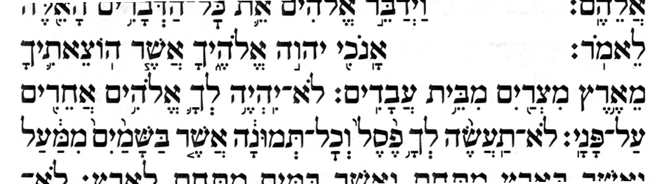
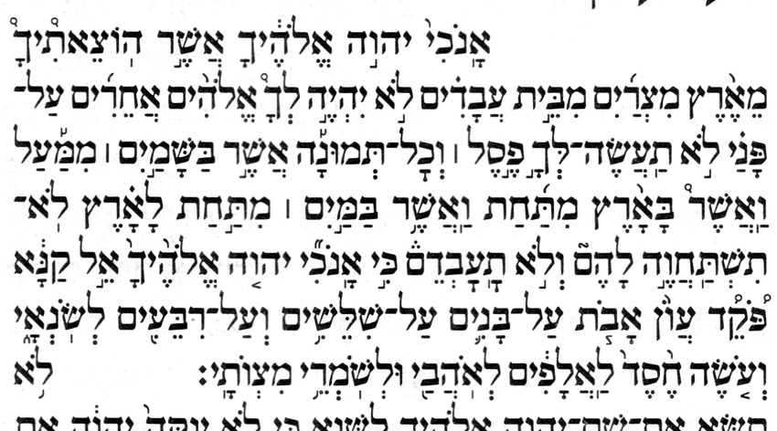
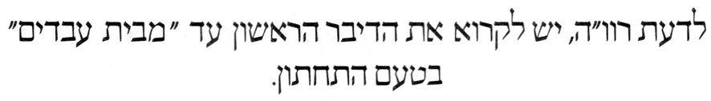
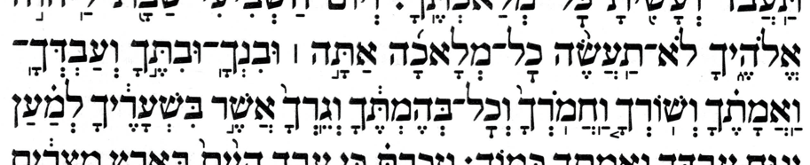

As the companion page explains, each Decalogue has four strands of cantillation: the printed tradition (p-trad) and the manuscript tradition (m-trad) each have their own טעם תחתון and their own טעם עליון. The most striking difference between the four strands is how they divide up the span אנכי…מצותי into chanted verses. (This span is typically identified as comprising the first two Commandments.)
That page lays out those four strands and grammar-checks the p-trad; this page serves only to document the claim that Koren follows the p-trad. Along the way it transcribes one of Koren's notes.
Koren follows the p-trad for the Decalogues. In its Exodus Decalogue, Koren's main Decalogue (pp. 113–114) is the p-trad תחתון and its appendix Decalogue (p. A38) is the p-trad עליון. The comparison throughout is against Hebrew Wikisource's p-trad. The two scans below show enough of Koren's Exodus Decalogues to "diagnose" them both as p-trad.


A note on the appendix Decalogue, keyed to the opening commandment אנכי…עבדים and citing רוו״ה.

לדעת רוו״ה, יש לקרוא את הדיבר הראשון עד "מבית עבדים"
בטעם
התחתון.
In the opinion of רוו״ה {R. Wolf Heidenheim}, one should read the First Commandment (up to “מבית עבדים”) in the תחתון.
Notation: text in {curly braces} is my editorial addition. That includes the expansion of the abbreviation רוו״ה, which I tentatively read as ר' וולף היידנהיים (R. Wolf Heidenheim) — the grammarian whose editions fixed much of the printed dual-cantillation norm, so the likeliest referent here, though I have not confirmed the expansion. The parentheses are likewise an editorial addition; the note itself has none.
The note is the mirror of the Simanim Tiqqun's p. 83 side-margin note. Koren's appendix has the עליון by default — the merged, nine-verse p-trad structure, in which אנכי…עבדים ends on a revia rather than closing its own verse. The note flags the alternative, on רוו״ה's authority: read the First Commandment (through מבית עבדים) in the תחתון — i.e. as its own chanted verse (silluq + sof pasuq at עבדים), which keeps ten distinct commandments. That תחתון cantillation is one of the four strands on the companion page (the p-trad תחתון, identical on its boundary words to the m-trad עליון — through עבדים; at the span's other signal word, על־פני, the two part). So Koren, like the Simanim Tiqqun, prints the p-trad structure as the norm and files the standalone-verse alternative under what one authority merely recommends — aware of the alternative, but not adopting it.
Koren follows the p-trad for the Decalogues, not the m-trad. The two traditions' most consequential divergence is over the opening span אנכי…מצותי — a divergence of chanted verse boundaries, which can be read off the accents on the span's two signal words, עבדים and על־פני. Koren lands on the p-trad side of that divergence on both strands: the p-trad תחתון in its Exodus main Decalogue (pp. 113–114), and the p-trad עליון in its appendix Decalogue (p. A38).
How far each of the four Decalogues follows that strand is a separate question from which strand it is, and one the signal words cannot answer. The last column adds the question the companion page asks of the four idealized strands, asked here of what Koren actually has: run through the same prose grammar checker, does it parse?
One thing to settle first, since it decides what these verdicts mean. A maqaf belongs on the same scale as the accents, at the bottom of it: it separates the atom it sits on — one written word — from the next even less than a conjunctive accent does, binding the two into a single chanted word, the unit an accent marks. So where an edition has a maqaf on an atom and its Wikisource strand a conjunctive accent, or the other way about, that is one difference in how that atom is marked — an exchange one rung deep, counted once and not twice as a regrouping plus an accent. It is, though, the mildest difference there is, and that is what these verdicts measure: how far down the scale each Decalogue's agreement with that strand reaches — the chanted verse boundaries, then the disjunctive skeleton, then the conjunctives, then the maqafs.
| Decalogue | pages | strand | how far it follows it | under the prose checker |
|---|---|---|---|---|
| Exodus main | 113–114 | p-trad תחתון | Every accent, and every maqaf with them — no difference anywhere the comparison reaches, though this Decalogue settles less than that suggests. In Exodus the two traditions accent the Shabbat commandment identically, so the only difference of accent it can adjudicate is the chanted verse boundary at עבדים. Koren takes the p-trad side of that, and of the traditions' one difference of vowel, the qamats/pataḥ of לא תרצח. | Clean at all 13 chanted verses, as its Wikisource strand is. |
| Deuteronomy main | 280–281 | p-trad תחתון | Every accent, every maqaf, and this is the Decalogue that tests the claim: in Deuteronomy the two תחתון strands part at 12 chanted words, and Koren takes the p-trad side of every one. 11 of them are differences of accent, which the transcription diffs; the last is the qamats/pataḥ of לא תרצח — a vowel, so outside what a transcription of accents records, and read off the page separately: Koren has the p-trad pataḥ. 7 of them fall inside the Shabbat commandment, where Exodus reaches nothing at all; the companion page's appendix catalogues them. | Clean at all 13 chanted verses, as its Wikisource strand is. |
| Exodus appendix | A38 | p-trad עליון | Every chanted verse boundary, the whole disjunctive skeleton, and every chanted word marked as its Wikisource strand marks it but two. At יהיה and at ובנך that strand has a maqaf where Koren has a munaḥ — one rung up the scale, so Koren separates into two chanted words what the Wikisource strand's maqaf makes one. | Its Wikisource strand's verdicts: chanted verse 1 ungrammatical, the other 8 clean. |
| Deuteronomy appendix | A39 | p-trad עליון | Every accent — and it joins both compounds its Exodus counterpart separates, so that separation is a fact about the one page rather than a habit of the edition. Its one difference is a maqaf, going the other way: Koren has לא־תעשה where its Wikisource strand has the two atoms apart, and keeps a munaḥ on the joined לא even so. Both sides therefore have the same two accents, so this is a difference no accent can show: it was read off the page rather than found by the diff. | Its Wikisource strand's verdicts: chanted verse 1 ungrammatical, the other 8 clean. |
Two of the four — the main Decalogues — match their Wikisource strand mark for mark. The other two part from theirs at the last rung only, each time at a maqaf: the Exodus appendix Decalogue separates both יהיה־לך and ובנך־ובתך, and the Deuteronomy appendix one joins לא־תעשה. Those are the mildest differences the scale has, and not one difference anywhere in the four takes the m-trad's side of anything. The separation of יהיה־לך in particular is Koren's own rather than a tradition's: only the עליון strands have that compound at all — the תחתון strands instead bind לא to יהיה, leaving לך standing on its own with a tevir — and not one of the four עליון strands separates it. So that separation says nothing about which tradition Koren follows.
Joining לא־תעשה costs Koren nothing in accents because it keeps the munaḥ on the לא it joins — and a joined atom that keeps its own accent is the rarer thing here, rarer than the maqaf difference itself. How rare it is in MAM's prose verses is counted on its own page, and one shape the count comes back empty for is Koren's own: no maqaf compound of those verses has the same accent on both atoms. WLC — a corrected transcription of the Leningrad Codex — has that shape twice, with a munaḥ on both atoms each time: at 1 Chronicles 27:14, לעשת֣י־עש֣ר, and at 2 Chronicles 1:11, וי֣אמר־אלה֣ים. So Koren's compound is not unheard of — but its precedent is a manuscript's, and no printed edition is known to have one.
Under the checker, too, each of the four is exactly as grammatical as its Wikisource strand — and for the two appendix Decalogues that is worth spelling out, because that strand is ungrammatical. The p-trad עליון merges the first two commandments into one chanted verse, and that verse is the one the companion page's grammar check rejects. Koren has it, in both books. So the companion page's finding is not a property of an idealized strand: it is on the page of a book in print. It is also, as it happens, the very reading the p. A38 note above offers an alternative to — read the First Commandment in the תחתון, as its own chanted verse, and the merged verse never arises. The note argues from the count of ten commandments and says nothing about grammar, so this is a coincidence of subject rather than a grammatical motive; but the alternative it declines to print is the one the checker's objection points at.
One scope note: the finding above rests on the אנכי…מצותי span — the most striking p-trad/m-trad divergence. Koren makes the same p-trad choice at that span in both of its Decalogues: the Exodus one and the Deuteronomy (Vaetḥanan) one, whose תחתון main Decalogue starts on p. 280 and runs onto p. 281. There too אנכי…עבדים is its own chanted verse, closing on עבדים with a silluq + sof pasuq.
Koren's Deuteronomy also reaches a divergence its Exodus Decalogue cannot: the Shabbat commandment, where the p-trad and m-trad part again. There too Koren has the p-trad — so its p-trad allegiance is unqualified, where the Simanim page finds Simanim's Tiqqun following the m-trad accents at that very commandment (an accents-only departure — Simanim's Tiqqun still follows the p-trad's chanted verse boundaries). So Koren happens to be pure p-trad at both divergence points, where Simanim's Tiqqun is not — and it is exactly that kind of impurity the Shabbat commandment's own signal words exist to catch, since an accents-only departure moves no chanted verse boundary and so leaves עבדים and על־פני reading p-trad throughout. The scan below is that commandment, with three signal words highlighted — not the only chanted words the two traditions accent differently, but three disjunctively accented ones that make a handy shorthand for telling the p-trad from the m-trad. In Koren's p-trad they have, respectively, a geresh, a revia, and a zaqef; the companion page's appendix has the full details. The Deuteronomy half of the claim no longer rests on the תחתון alone: Koren's Deuteronomy עליון, in its appendix (p. A39), has since been transcribed too, and follows the p-trad in every accent.
